1. Introduction
Long-context capability is pivotal for modern machine learning, particularly in natural language processing and time series analysis. However, maintaining context over extended sequences remains a bottleneck. As shown in the figure below, processing a long document with the Qwen3-4B model leads to an explosion in KV cache usage.
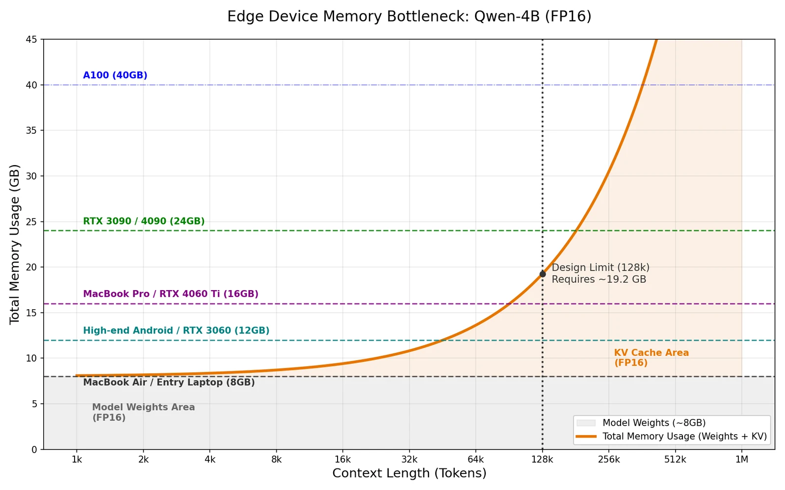
This contrasts sharply with biological intelligence. Unlike humans, whose hippocampus consolidates short-term working memory into long-term storage (often during sleep), LLMs rely solely on a growing raw buffer—the KV cache. Setting aside RAG (which acts more like an external notebook than an internal brain), I wonder if we can engineer a similar "memory consolidation" mechanism for LLMs. Specifically, can we leverage fine-tuning to compress history directly into model weights? By doing so, we could drastically reduce the KV cache footprint and improve inference speed. While training is computationally expensive, LLMs are not always active; we can potentially utilize the intervals between user queries—such as waiting for tool feedback or human response—to perform this optimization. This initial post explores the feasibility of this idea and the challenges that lie ahead.
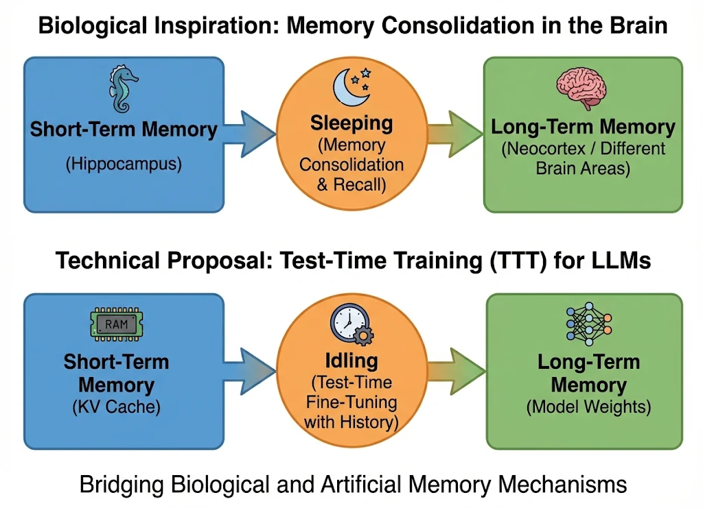
2. Related Work: The Landscape of Long Context
To tackle the "memory wall" in LLMs, researchers have explored three main directions. Here, I discuss why existing solutions might not be the final answer and how TTT fits into the picture.
2.1 Architectural Alternatives & The "Capacity Limit"
One direction is to design new memory forms, often inspired by RNNs. Linear Attention mechanisms (like RWKV or Mamba) compress history into a fixed-size state, allowing for O(N) inference. Google's recent Titans also introduces a "Neural Memory" module that explicitly manages memorization and forgetting.
However, these methods face a theoretical ceiling. As pointed out in this paper, linear attention stores information in a matrix and retrieves it via dot products. Crucially, effective retrieval requires the keys to be orthogonal. This implies that once the sequence length exceeds the dimension capacity (overcapacity regime), the model suffers from unavoidable retrieval errors due to interference. This explains why they often struggle with long context — Section 5 measures this directly on modern Mamba-2 and Gated DeltaNet checkpoints.
2.2 KV Cache Optimization: Pruning & Sparsity
For standard Transformers, another line of work focuses on managing the existing KV cache:
- Cache Eviction (Reducing Space): Methods like SnapKV, H2O, and StreamingLLM identify and evict "unimportant" tokens to keep the cache size constant. While this accelerates inference and saves memory, it is inherently lossy—if the answer lies in an evicted token, the model hallucinates.
- Sparse Attention (Accelerating Compute): Other methods select only the top-K relevant tokens for calculation (e.g., Less Is More). While this speeds up the attention operation, it doesn't necessarily reduce the memory footprint if the full cache still needs to be stored for selection.
2.3 Test-Time Training (TTT): The "Third Path"
This brings us to Test-Time Training (TTT). Analogous to the human brain, TTT allows the model to "learn" (update weights) from the context on-the-fly. Recently, TTT-E2E achieves better performance than linear attention through test-time training. Specifically, they modify the model architecture, optimize the training loss and train a model from scratch.
However, TTT-E2E requires pre-training a novel architecture from scratch. This is computationally expensive and discards the massive knowledge embedded in existing open-source models.
My Hypothesis: Can we leverage the TTT capability inherent in existing frozen LLMs? Instead of designing a new TTT model, can we directly use TTT for existing models, thereby saving memory and accelerating inference?
3. Can the model learn?
One of the main problems of TTT is that when training the model with the long context, we want the model to learn the token sequence, while models possibly are learning the distribution instead. That is, we want the model to memorize specific sequences rather than generalize from them. Therefore, it is necessary to validate TTT.
To test this, I set up a simple experiment using Qwen3-4B. I use my own version of Needle-In-A-Haystack(NIAH), whose detailed design is shown below.
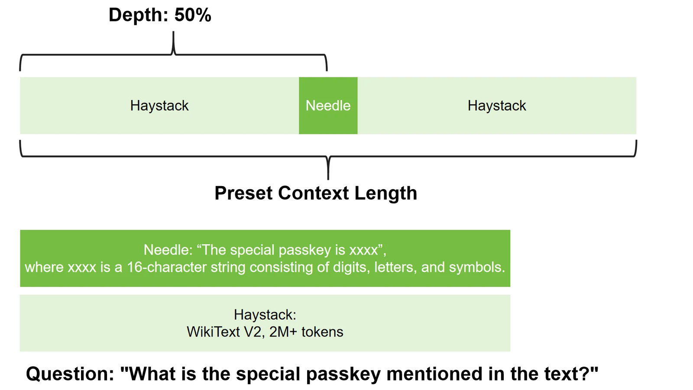
In this experiment, I train the model with the needle and haystack sequences. And then, the model is provided with merely the question, asking to recall the needle sequence from the haystack. I choose different training configurations to observe the model's learning behavior, including LoRA and full fine-tuning.
All experiments below use Qwen3-4B-Instruct-2507: for each NIAH instance I fine-tune the last 4 layers for 100 epochs (chunk size 4096, lr 2e-4), then ask the retrieval question without any context in the prompt. Each cell reports exact-match recall over 10 sampled generations.
3.1 Sanity check: retrieval from the KV cache is easy
First, the standard NIAH setting where the haystack stays in the prompt. The model retrieves the needle almost perfectly from 1k all the way to 256k tokens, so any failure in the experiments below is attributable to the in-weights memory, not the task.
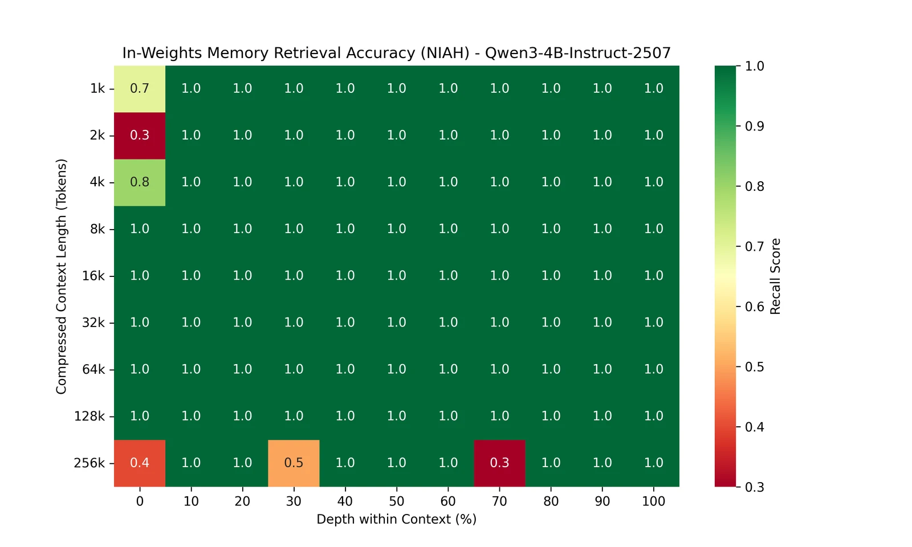
3.2 Full fine-tuning works — but only below ~8k tokens
Fully fine-tuning the MLPs of the last 4 layers can consolidate the needle into the weights: recall is strong at 1k–4k. But it degrades sharply at 8k and is essentially zero from 16k onward. My first hypothesis was gradient dilution — with a uniform LM loss, the needle is a ~10-token span whose share of the gradient shrinks with context length. Section 3.6 tests this and finds the dominant bottleneck is actually capacity.
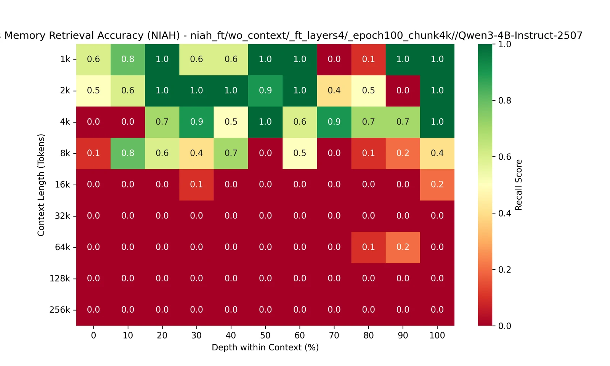
3.3 LoRA learns the loss but recalls nothing
The same experiment with rank-16 LoRA on the MLPs produces a striking result: recall is 0.0 in every single cell, even at 1k tokens where the training loss converges close to zero. The adapter is clearly learning something — Section 4 investigates what.
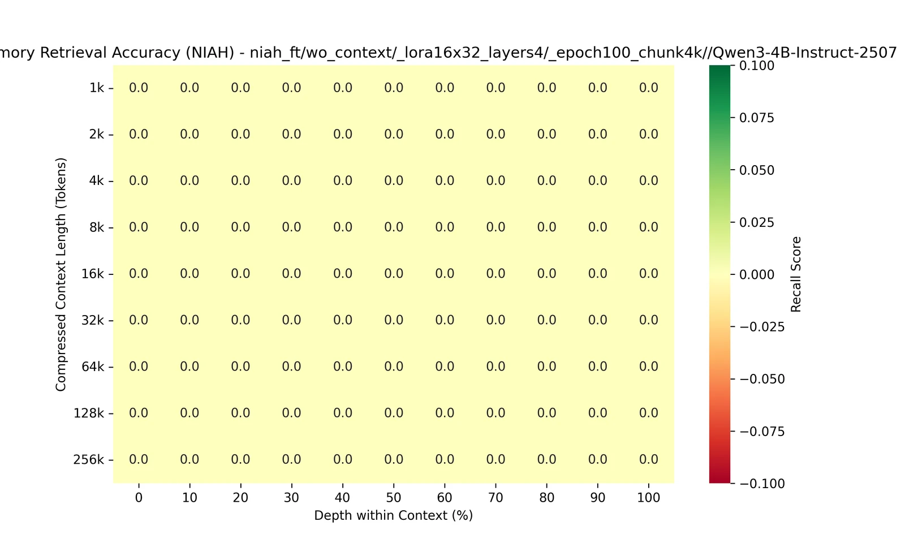
3.4 QKVO vs MLP: facts live in the MLPs
Is the choice of which modules to adapt important? I repeated both settings on the attention projections (Q, K, V, O) instead of the MLPs. The contrast is clear: full fine-tuning of QKVO only recalls at 1k (and only at some depths), and rank-16 LoRA on QKVO does not even reach a low training loss — recall is zero everywhere. This matches the knowledge-editing literature (e.g., ROME): transformer MLPs act as key–value memories where factual associations are stored, while attention mainly routes information.
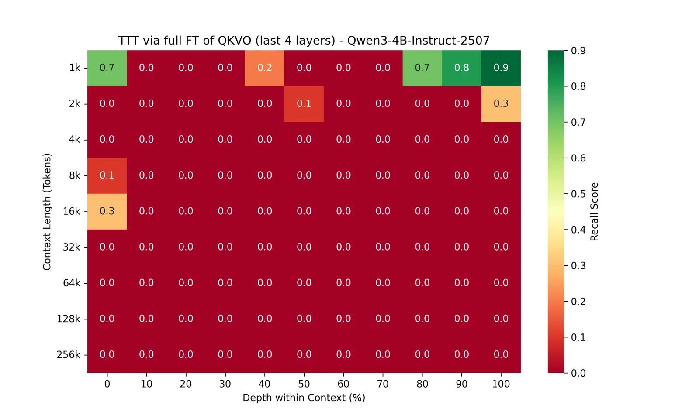
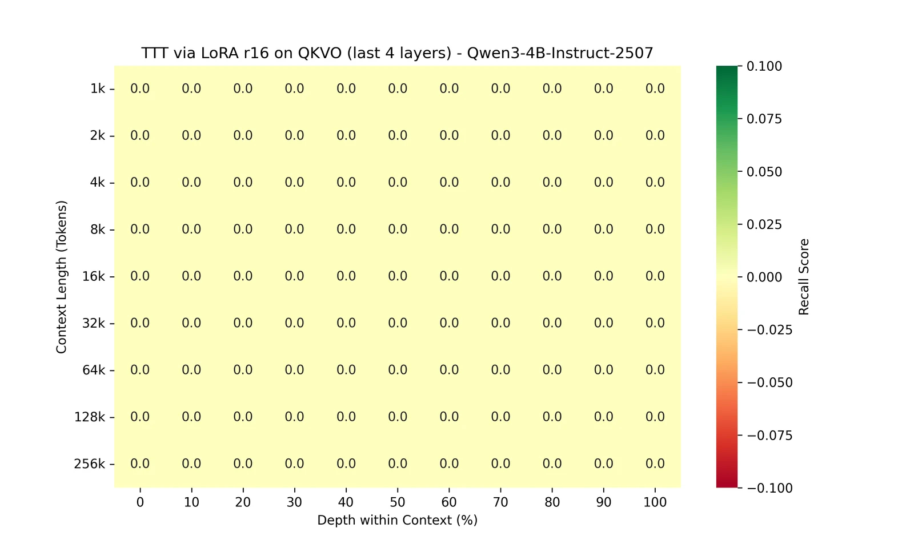
3.5 Is LoRA's failure just capacity? Partially.
Raising the LoRA rank from 16 to 256 (on the MLPs) does change the picture, but not by much on the strict exact-match metric: only scattered non-zero cells at short lengths. The interesting part is in the model's responses — the rank-256 model often recalls a prefix of the passkey and then loses the tail, e.g. answering cRiCPXCEbAx0 for the true passkey cRiCPXCEbAx0HUAk. The memory is there, but the reconstruction is lossy and unstable. Capacity gates how reliably the fact can be written into the adapter, and rank 256 sits right at the edge for this task.
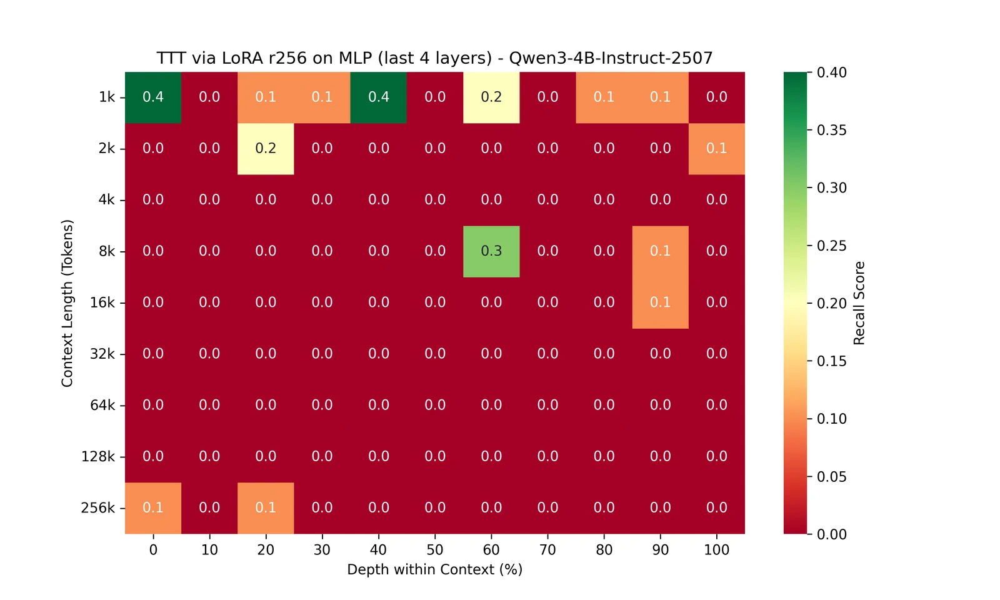
3.6 Scaling the memory: fine-tuning all the MLPs
Is the 8k wall fundamental, or did I just give the model too small a memory? Repeating the full fine-tuning experiment on the MLPs of all 36 layers (~2.4B trainable parameters instead of ~0.3B) gives a dramatic answer: recall stays near-perfect through 131k tokens and mostly holds at 262k. The wall was capacity, not context length. It comes at a price — every step now back-propagates through the whole network at roughly 3× the training cost, and each context rewrites 2.4B parameters.
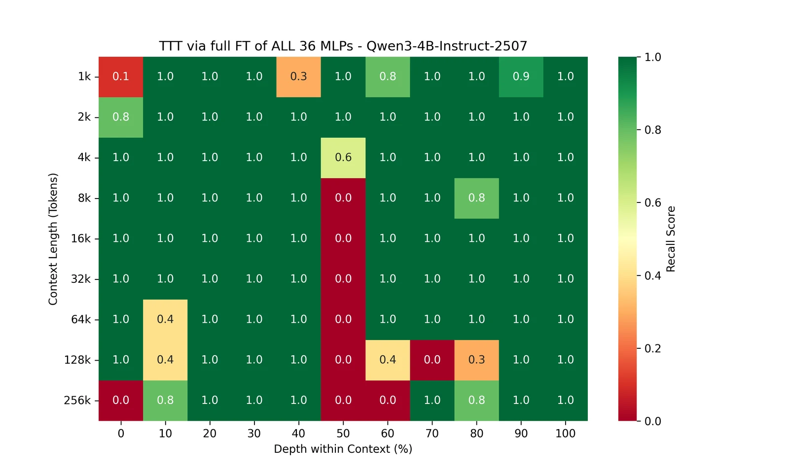
The heatmap also contains an accidental discovery: the depth-50 column reads 0.0 from 8k onward while depths 40 and 60 are perfect. This is not noise. Training chunks the context into fixed non-overlapping 4096-token windows, and for power-of-two lengths a needle at 50% depth lands exactly on a chunk boundary — at 8k it occupies tokens ~4089–4102, straddling the 4096 split; the same happens at every length up to 262k. No training sample ever contains the intact passkey, so the model provably cannot memorize it. Naive chunking silently destroys any fact that crosses a window boundary; overlapping or boundary-aware chunking is a necessary fix.
3.7 The longer-context wall, revisited
Putting the grids together: with a small trainable memory (last 4 layers), every configuration — LoRA or full fine-tuning, MLP or QKVO — dies between 4k and 16k. Giving TTT all the MLPs pushes reliable recall to 131k, with degradation reappearing only at 262k (scattered zeros away from the boundary artifact), where signal dilution and interference between sequential chunk updates plausibly take over. So the wall is an engineering problem, not a law — but the memory that works costs billions of parameter updates per context, while the same model retrieves perfectly from its KV cache at 256k for free. Making in-weights memory cheap is the real challenge.
4. What have the model learnt?
The all-zero LoRA heatmap begs a question: if the training loss converges, what did the adapter actually learn? I probed each fine-tuned model (2k-token context, needle at 50% depth) with four tests of increasing "semantic distance" from the training data:
- Needle NLL — per-token loss on the needle inside the context: did it memorize the sequence?
- Verbatim continuation — given the context right before the needle, does greedy decoding reproduce it?
- Cued completion — given "The special passkey is '", does it complete the passkey?
- QA recall — the semantic question, with no context at all.
| Configuration | Needle NLL ↓ | Verbatim | Cued | QA recall |
|---|---|---|---|---|
| base (no TTT) | 8.10 | ✗ | ✗ | 0.0 |
| LoRA-MLP r16 | 0.18 | ✓ | ✓ | 0.0 |
| LoRA-QKVO r16 | 3.80 | ✗ | ✗ | 0.0 |
| LoRA-MLP r256 | 0.0004 | ✓ | ✓ | 0.6 |
| Full FT MLP | 0.0000 | ✓ | ✓ | 1.0 |
| Full FT QKVO | 0.0001 | ✓ | ✓ | 0.6 |
The rank-16 MLP LoRA row is the key finding of this post: the adapter drives the needle's NLL to 0.18, reproduces the needle verbatim from a positional cue, and completes the passkey from its prefix — yet scores exactly zero on the semantic question. TTT with a plain LM loss stores the context as a sequence, retrievable only by sequential cues, not as a fact, retrievable by meaning. Memorization and retrievability are different capabilities, and the second one is what long-context inference actually needs.
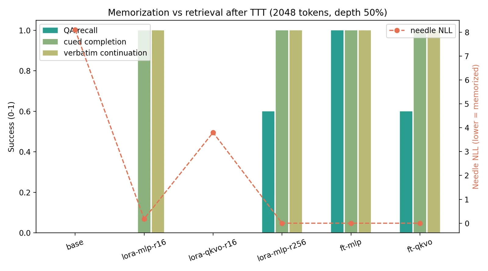
To see where the fact becomes accessible, I apply a logit lens: at the answer position of the QA prompt, I project every layer's hidden state through the final norm and LM head, and track the probability of the passkey's first token. In the base model the fact never appears. In the fine-tuned models it emerges only in the last four layers — exactly the layers TTT was allowed to touch — and the height it reaches cleanly separates the configurations that can answer the question (full-FT MLP, LoRA r256 reach p≈1) from those that cannot (LoRA r16 stalls at p≈0.003).
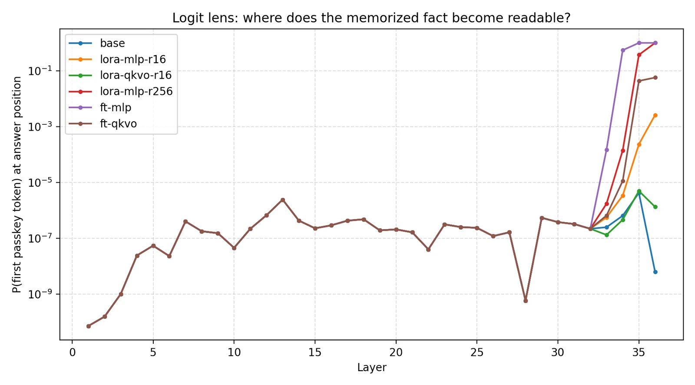
Two caveats worth stating. I repeated the probe on three random NIAH instances: the central result is fully stable (rank-16 LoRA memorizes but scores 0.0 QA recall in all three; full-FT MLP scores 1.0 in all three; rank-256 stays at 0.4–0.6), while full-FT QKVO is genuinely brittle, swinging between 0.0 and 0.6 across instances — consistent with its near-empty heatmap in Figure 7. Second, aggressive TTT is not free: after 100 epochs the fully fine-tuned model answers the question correctly but then degrades into repetitive junk tokens, a reminder that consolidating memory this way erodes general behavior.
4.1 Imitating KV-cache retrieval closes the gap
In-context retrieval happens through attention's softmax over the KV cache. So instead of training TTT to imitate the token sequence, can it imitate that retrieval behavior directly? I tested this with context distillation: a teacher — the same frozen model with the context in its prompt — answers retrieval questions, and the student (the exact rank-16 LoRA configuration that fails above, seeing no context) is trained to match the teacher's output distribution with a KL loss. To rule out trivial question memorization, one variant trains only on 8 paraphrases of the question and is evaluated on the held-out original phrasing.
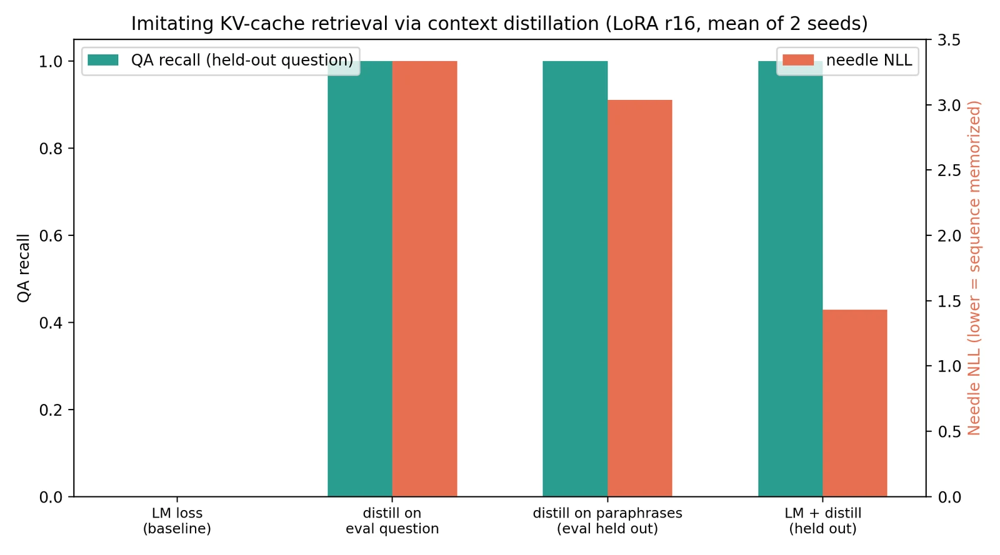
The result is a clean double dissociation, identical in both seeds. Plain LM loss drives the needle NLL to ~0.001 yet recall stays at 0.0. Distillation leaves the sequence largely un-memorized (needle NLL ≈ 3) yet reaches 100% recall — including on the held-out question phrasing. The combined loss achieves both. So the model does not fail to learn the memory through TTT: it learns exactly what the objective asks for. Next-token prediction writes a sequence; distilling the softmax of in-context attention writes a queryable fact — and the retrieval function itself fits in 1.3M adapter parameters. The honest caveat: the teacher must still hold the full context in its KV cache to produce the training targets, so this is a proof of mechanism rather than a deployable compression scheme yet — the missing piece is generating retrieval-style training signals without the teacher.
5. Linear Attention Is TTT Baked into the Architecture
Section 2.1 argued from theory that linear attention faces a capacity ceiling. The experiments above give us the tools to test this empirically — because linear attention is test-time training, just built into the architecture. Its recurrent state update S ← α·S + β·v·kᵀ is an online (delta-rule) gradient step that writes each token's key→value association into a fixed-size fast-weight matrix, and retrieval is a linear readout S·q — a dot product with no softmax. In other words: a small in-weights memory with a weak retrieval mechanism, which is exactly the configuration that failed in Sections 3–4. So I ran the same NIAH task in-context on modern linear-attention models: Mamba-Codestral-7B (Mamba-2) and Gated DeltaNet 1.3B in pure and hybrid (one softmax-attention layer per six linear layers) variants. For these models the context sits in the prompt — their "KV cache" is the fixed-size state itself.
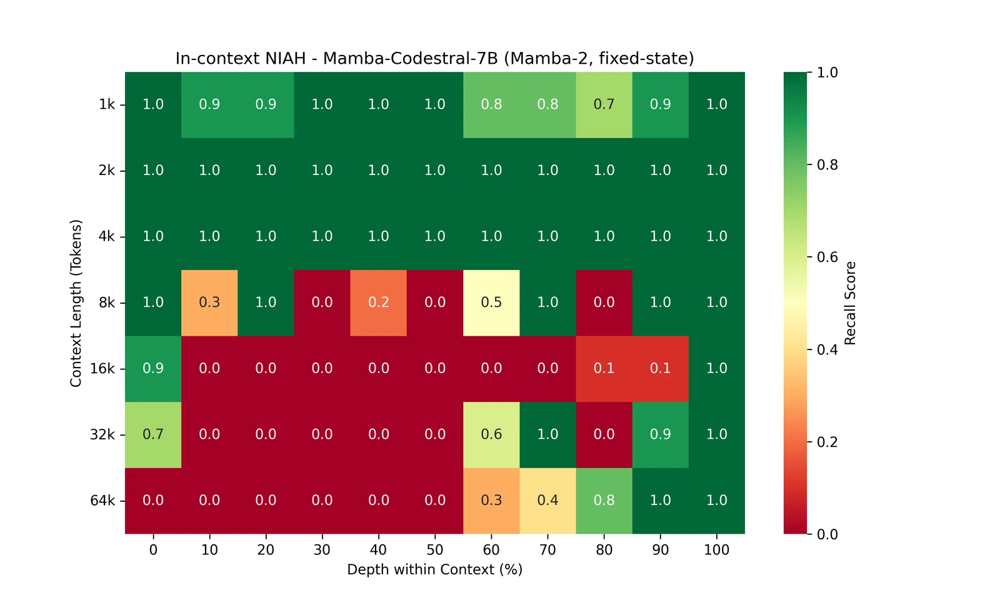
The result is the exact mirror of the Transformer baseline in Figure 4. Where Qwen3-4B's KV cache retrieves perfectly at every depth out to 256k, Mamba-Codestral is perfect only through 4k. Beyond that, recall collapses from the middle of the context outward: by 64k, only needles placed in the last ~10–20% of the context survive (depth 100 — the very end — never fails). The gated state keeps what is recent and overwrites what came before. This is the same interference phenomenon we saw when sequential TTT chunk updates eroded earlier associations — except here it happens token-by-token, by construction.
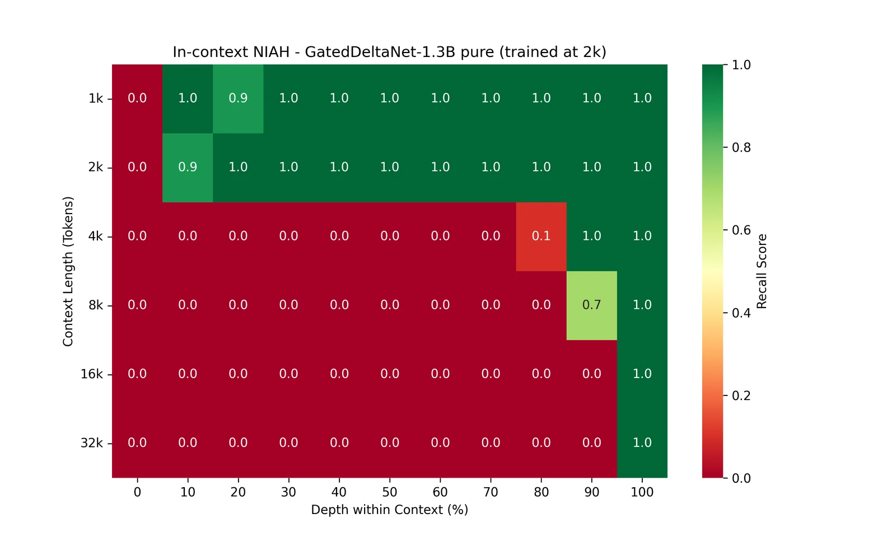
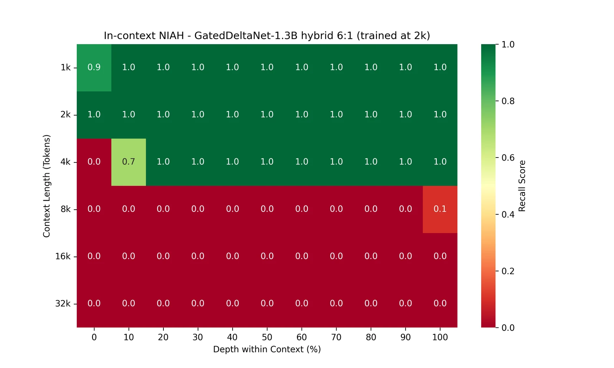
The Gated DeltaNet pair makes the mechanism even clearer. The pure model (trained at 2k) is perfect at 2k and recency-only beyond. The hybrid extends reliable recall to 4k — its occasional softmax layers act as a small KV cache — but at 8k it collapses completely, losing even the recency tail that the pure model retains: the attention layers do not extrapolate past their trained positions, and the model has learned to depend on them. Hybrids inherit softmax attention's power and its limits. (Caveats: these are 1.3B research checkpoints trained on 100B tokens at 2k context, probed completion-style since they are base models; they load in stock fla without a small per-layer D parameter from the training fork — recall at the trained length is nonetheless perfect.)
Putting the whole post together, the connection runs deep. Linear attention and TTT are two points on one design space: where do you put memory, and how do you read it back? The KV cache is a memory that grows without bound and is read by softmax attention — sharp, content-addressed, and empirically flawless to 256k, but expensive to store. Linear attention shrinks that memory to a constant-size state read by a dot product — cheap, but our heatmaps show it holding only a few thousand tokens' worth of associations, biased toward recent ones. TTT into model weights is a third point: a much larger writable memory (up to 2.4B parameters in Section 3.6) that beats the fixed state's capacity by orders of magnitude — but only once the training objective targets retrieval, not just prediction (Section 4.1). The open opportunity is combining these: consolidate old context into weights with a retrieval-aware objective, keep a small recent window in cache, and let each memory do what it is good at.
6. Future Work
These results reframe the problem: information can be written into the weights — with enough trainable capacity, even a 131k-token context — but making it retrievable by meaning, reliably, and cheaply is the open problem. Several directions follow naturally:
- Train for retrieval, not prediction. Section 4.1 shows this works: distilling the in-context softmax into the adapter achieves perfect recall where LM loss achieves none. The open problem is producing such retrieval-style training signals without a teacher that still holds the full KV cache — e.g., self-generated QA pairs over chunks (the model rehearsing its own memory, much like the hippocampus replays experiences during sleep).
- Salience-weighted consolidation. Up-weight the loss on informative spans (rare tokens, entities, high-surprisal regions) to fight the signal dilution that kills recall beyond 8k.
- Fight interference at length. Replay/rehearsal schedules over chunks, or consolidating hierarchically (chunk summaries first, details on demand), instead of a single uniform pass over a 256k stream.
- Overlap-aware chunking. The depth-50 artifact in Section 3.6 shows that non-overlapping windows silently destroy boundary-crossing facts; sliding windows or sentence-aligned chunking would remove this failure mode.
- Cheaper capacity. All-MLP fine-tuning works but updates 2.4B parameters per context. Finding the minimal sufficient memory — which layers, which modules, possibly chosen per-context — would make consolidation practical.
- Hybrid memory. Keep a short recent-window KV cache and consolidate only older history into weights — the biological analogy suggests working memory and long-term memory should coexist, not replace each other.
- Preserving the base model. Regularize TTT (e.g. a KL anchor to the base model) so consolidation stops corroding general capabilities.
- Real workloads and systems questions. Move beyond synthetic NIAH to LongBench-style tasks, and measure the end-to-end trade-off: TTT costs training FLOPs during idle time but saves KV-cache memory and prefill latency at every subsequent query.